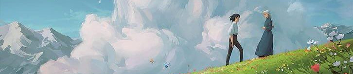

|
 |
 |
 |
 |
Reviews
Howl's Moving Castle (10/10)
A wild and surreal trip into the mind of a master.
20 March 2005
I think this is possibly Miyazaki's most intriguing movie. All of his other films are very linear and even though their highly varied worlds may be visually stunning and highly creative, I feel the dreamy world of Howls Moving Castle is by far the most captivating, bizarre, and imaginative of all the worlds Miyazaki has ever envisioned.
What I love about this movie is that it's highly emotional without a great deal of logic or plot or story to get in the way. In this way the film is simple, pure, and extremely beautiful. It is as if the characters go from one emotion to the next, in a world that is as random as one's own dreams. Some people have complained about the lack of plot or story or serious character development, but even though the characters are fairly static, their emotions and the physical changes they undergo as they go through these emotions brings out a higher truth that is seldom given such artistic and natural freedom.
I think this is a very smart movie in many subtle ways and it's one that I look forward to watching again on the big screen and then on DVD. Although it flirts from theme to theme to theme with a kind of animated attention deficit disorder, the landscapes and utter unabated surrealism left me stunned and never bored.
Also, from a quizzical character design perspective, Howl is certainly one of if not the most beautiful characters that Miyazaki has ever created. Howl is an interesting departure from Miyazaki's more classical wabi-sabi anime style that most of his heroes and heroines are drawn in as Howl is definitely a very contemporary bishonen.
If you're looking for quaint settings, dynamic characters and a very involving character or plot driven story, you're not going to necessarily find them here, but you will find an equally stunning and pleasing movie if you let yourself go and enjoy this passionate, heartfelt and surreal Miyazaki dream.

Howl's Moving Castle (10/10)
6 June 2005
Howl's Moving Castle is as marvelous and magical as Miyazaki's other great work. Something in Disney's advertising or the description I read gave the false impression that it was going to be sub-standard work meaning it was still going to be better than anything DreamWorks Animation was doing (Madagascar was sooo pedestrian).
While not as awe-inspiring as Spirited Away or action-packed as Mononoke, it does work on the level of Kiki's Delivery Service as a girl is forced to be better than she thinks she can be (well, that's not a big surprise, that's all his films). And as with all Miyazaki stories, the story teaches without being preachy. And the lessons learned are represented in character changes and in the character's physical appearance as well. It's that same attention to detail that has made Pixar so great.
The animation is wonderful. The castle is itself is a mesh-mash of so many haphazardly arranged pieces that an engineer would have an aneurysm just sorting them all out and yet it works. Through magic, of course. The magic being Howl's and the authoritative hand of Miyazaki's direction. The airships (wow, airships in a Miyazaki film? Who would have thunk?) are great variations of one's he's used before and there are some rather dark and beautiful scenes of a world at war.
Most of the voice work was very strong including Christian Bale (Howl) and Emily Mortimer (as the young version of the heroine, Sophie). The voice that surprised me was Billy Crystal as Calcifer, the little flame that could. He's the heart of the castle and only annoyed at his first few scenes then becomes a very likable character.
There a few clunky moments in the plot line where transitions between story points weren't very strong, but overall it's another outstanding film from Studio Ghibli. Even my 40 year old partner, who had spent the day mountain biking, was dead tired and had never seen a Miyazaki film stayed awake for the entire 2 hours. When we left at 3:30 in the morning still jabbering away about all the imagery and meaning, we realized we had seen true art.
Howl's Moving Castle (8/10)
Great provided you are not a huge Diana Wynne Jones fan or watch the film with one!
11 June 2007
I went to see this film with my anime and Diana Wynne Jones-loving teenage daughter. And while I enjoyed the film immensely due to its excellent animation, story and overall sense of fun, it was also interesting to see how much my daughter hated it! It was as if we saw two entirely different films. Why? Well, she is a huge Diana Wynne Jones fan and has read and re-read just about everything she ever wrote. And, according to her, the story was so different and so inferior to the book that she disliked the film and said some very nasty things about director Miyazaki. However, my advice is DON'T read the book and just go and see the movie. Then, after enjoying it, read the book ONLY if you are 100% sure you can do this without freaking out because they are so different!! I didn't know the difference and had a great time seeing the film!
NOTE: None of the reviews are written by me and have been taken from IMDB.com